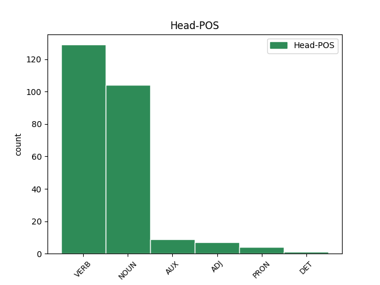
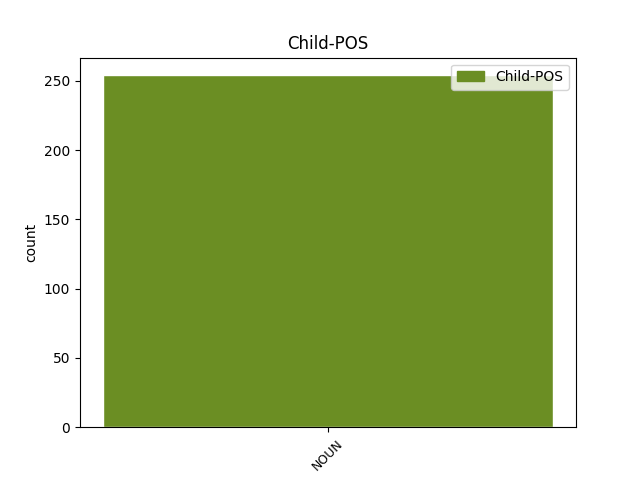

Distribution of features within this leaf


Agreement Rules sorted by frequency.
- When the dependent token is the modifer(mod) of the head token, and the head token is NOUN and the dependent token is NOUN.
1 Šių _ _ _ _ 0 _ _ _
2 dienų _ _ _ _ 0 _ _ _
3 valstybės _ _ _ _ 0 _ _ _
4 remia _ _ _ _ 0 _ _ _
5 savo _ _ _ _ 0 _ _ _
6 teisę _ _ _ _ 0 _ _ _
7 egzistuoti _ _ _ _ 0 _ _ _
8 ne _ _ _ _ 0 _ _ _
9 protėvių protėviai NOUN NN Case=Gen|Gender=Masc|Number=Plur 10 mod _ En=ancestral
10 žygdarbiais žygdarbis NOUN NN Case=Ins|Gender=Masc|Number=Plur 0 _ _ _
11 ir _ _ _ _ 0 _ _ _
12 kančiomis _ _ _ _ 0 _ _ _
13 , _ _ _ _ 0 _ _ _
14 o _ _ _ _ 0 _ _ _
15 tuo _ _ _ _ 0 _ _ _
16 , _ _ _ _ 0 _ _ _
17 kaip _ _ _ _ 0 _ _ _
18 funkcionuoja _ _ _ _ 0 _ _ _
19 jų _ _ _ _ 0 _ _ _
20 ekonomika _ _ _ _ 0 _ _ _
21 , _ _ _ _ 0 _ _ _
22 teisė _ _ _ _ 0 _ _ _
23 , _ _ _ _ 0 _ _ _
24 administracija _ _ _ _ 0 _ _ _
25 , _ _ _ _ 0 _ _ _
26 savivalda _ _ _ _ 0 _ _ _
27 . _ _ _ _ 0 _ _ _
1 Emocijos _ _ _ _ 0 _ _ _
2 ir _ _ _ _ 0 _ _ _
3 ekstatiški _ _ _ _ 0 _ _ _
4 ritualai _ _ _ _ 0 _ _ _
5 yra _ _ _ _ 0 _ _ _
6 gana _ _ _ _ 0 _ _ _
7 pavojingas _ _ _ _ 0 _ _ _
8 daiktas _ _ _ _ 0 _ _ _
9 – _ _ _ _ 0 _ _ _
10 tuos _ _ _ _ 0 _ _ _
11 metodus metodas NOUN NN Case=Acc|Gender=Masc|Number=Plur 12 comp:obj _ En=method
12 naudojo naudoti VERB VBC Mood=Ind|Number=Plur|Person=3|Polarity=Pos|Reflex=No|Tense=Past|VerbForm=Fin|Voice=Act 0 _ _ _
13 ir _ _ _ _ 0 _ _ _
14 nacizmas _ _ _ _ 0 _ _ _
15 , _ _ _ _ 0 _ _ _
16 ir _ _ _ _ 0 _ _ _
17 stalinizmas _ _ _ _ 0 _ _ _
18 . _ _ _ _ 0 _ _ _
1 Esu _ _ _ _ 0 _ _ _
2 ne _ _ _ _ 0 _ _ _
3 kartą kartas NOUN NN Case=Acc|Gender=Masc|Number=Sing 4 udep _ En=time
4 kalbėjęs kalbėti VERB VBNH Case=Nom|Definite=Ind|Gender=Masc|Number=Sing|Polarity=Pos|Reflex=No|Tense=PastSimp|VerbForm=Part|Voice=Act 0 _ _ _
5 apie _ _ _ _ 0 _ _ _
6 pavojingą _ _ _ _ 0 _ _ _
7 „ _ _ _ _ 0 _ _ _
8 lietuviškąją _ _ _ _ 0 _ _ _
9 triadą _ _ _ _ 0 _ _ _
10 “ _ _ _ _ 0 _ _ _
11 ( _ _ _ _ 0 _ _ _
12 sakyčiau _ _ _ _ 0 _ _ _
13 , _ _ _ _ 0 _ _ _
14 lietuviškąjį _ _ _ _ 0 _ _ _
15 Bermudų _ _ _ _ 0 _ _ _
16 trikampį _ _ _ _ 0 _ _ _
17 ) _ _ _ _ 0 _ _ _
18 – _ _ _ _ 0 _ _ _
19 nesutarimus _ _ _ _ 0 _ _ _
20 su _ _ _ _ 0 _ _ _
21 rusais _ _ _ _ 0 _ _ _
22 , _ _ _ _ 0 _ _ _
23 lenkais _ _ _ _ 0 _ _ _
24 ir _ _ _ _ 0 _ _ _
25 žydais _ _ _ _ 0 _ _ _
26 , _ _ _ _ 0 _ _ _
27 arba _ _ _ _ 0 _ _ _
28 su _ _ _ _ 0 _ _ _
29 Rusija _ _ _ _ 0 _ _ _
30 , _ _ _ _ 0 _ _ _
31 Lenkija _ _ _ _ 0 _ _ _
32 ir _ _ _ _ 0 _ _ _
33 Izraeliu _ _ _ _ 0 _ _ _
34 . _ _ _ _ 0 _ _ _
1 Iš _ _ _ _ 0 _ _ _
2 viso _ _ _ _ 0 _ _ _
3 kurti _ _ _ _ 0 _ _ _
4 fetišą _ _ _ _ 0 _ _ _
5 , _ _ _ _ 0 _ _ _
6 stabą _ _ _ _ 0 _ _ _
7 iš _ _ _ _ 0 _ _ _
8 valstybės _ _ _ _ 0 _ _ _
9 – _ _ _ _ 0 _ _ _
10 nepriimtina _ _ _ _ 0 _ _ _
11 praktika _ _ _ _ 0 _ _ _
12 , _ _ _ _ 0 _ _ _
13 nes _ _ _ _ 0 _ _ _
14 ji _ _ _ _ 0 _ _ _
15 pažeidžia _ _ _ _ 0 _ _ _
16 pirmąjį _ _ _ _ 0 _ _ _
17 Dievo _ _ _ _ 0 _ _ _
18 įsakymą _ _ _ _ 0 _ _ _
19 , _ _ _ _ 0 _ _ _
20 privalomą privalėti VERB VBNL Case=Acc|Definite=Ind|Gender=Masc|Number=Sing|Polarity=Pos|Reflex=No|Tense=Pres|VerbForm=Part|Voice=Pass 0 _ _ _
21 ir _ _ _ _ 0 _ _ _
22 krikščioniui krikščionis NOUN NN Case=Dat|Gender=Masc|Number=Sing 20 comp:obl _ En=Christian|SpaceAfter=No
23 , _ _ _ _ 0 _ _ _
24 ir _ _ _ _ 0 _ _ _
25 šiaip _ _ _ _ 0 _ _ _
26 jau _ _ _ _ 0 _ _ _
27 mąstančiam _ _ _ _ 0 _ _ _
28 žmogui _ _ _ _ 0 _ _ _
29 . _ _ _ _ 0 _ _ _
1 Šį _ _ _ _ 0 _ _ _
2 bei _ _ _ _ 0 _ _ _
3 tą _ _ _ _ 0 _ _ _
4 būtų _ _ _ _ 0 _ _ _
5 galima _ _ _ _ 0 _ _ _
6 pasakyti _ _ _ _ 0 _ _ _
7 ir _ _ _ _ 0 _ _ _
8 apie _ _ _ _ 0 _ _ _
9 brolius brolis NOUN NN Case=Acc|Gender=Masc|Number=Plur 0 _ _ _
10 pabaltiečius pabaltietis NOUN NN Case=Acc|Gender=Masc|Number=Plur 9 appos _ En=Baltic|SpaceAfter=No
11 . _ _ _ _ 0 _ _ _
1 Tiesa tiesa NOUN NN Case=Nom|Gender=Fem|Number=Sing 5 parataxis _ En=to_say_the_truth|SpaceAfter=No
2 , _ _ _ _ 0 _ _ _
3 Strepsiadas _ _ _ _ 0 _ _ _
4 ir _ _ _ _ 0 _ _ _
5 negalėjo galėti VERB VBC Mood=Ind|Number=Sing|Person=3|Polarity=Neg|Reflex=No|Tense=Past|VerbForm=Fin|Voice=Act 0 _ _ _
6 laimėti _ _ _ _ 0 _ _ _
7 . _ _ _ _ 0 _ _ _
1 Tuo _ _ _ _ 0 _ _ _
2 tarpu _ _ _ _ 0 _ _ _
3 tautai tauta NOUN NN Case=Dat|Gender=Fem|Number=Sing 14 udep _ En=nation
4 kaip _ _ _ _ 0 _ _ _
5 tokiai _ _ _ _ 0 _ _ _
6 , _ _ _ _ 0 _ _ _
7 bent _ _ _ _ 0 _ _ _
8 po _ _ _ _ 0 _ _ _
9 Stalino _ _ _ _ 0 _ _ _
10 epochos _ _ _ _ 0 _ _ _
11 , _ _ _ _ 0 _ _ _
12 didelio _ _ _ _ 0 _ _ _
13 pavojaus _ _ _ _ 0 _ _ _
14 nebuvo būti AUX VBC Mood=Ind|Number=Sing|Person=3|Polarity=Neg|Reflex=No|Tense=Past|VerbForm=Fin|Voice=Act 0 _ _ _
15 – _ _ _ _ 0 _ _ _
16 tą _ _ _ _ 0 _ _ _
17 neginčijamai _ _ _ _ 0 _ _ _
18 įrodo _ _ _ _ 0 _ _ _
19 faktas _ _ _ _ 0 _ _ _
20 , _ _ _ _ 0 _ _ _
21 kad _ _ _ _ 0 _ _ _
22 tauta _ _ _ _ 0 _ _ _
23 ir _ _ _ _ 0 _ _ _
24 kalba _ _ _ _ 0 _ _ _
25 išliko _ _ _ _ 0 _ _ _
26 neišnykusios _ _ _ _ 0 _ _ _
27 , _ _ _ _ 0 _ _ _
28 nes _ _ _ _ 0 _ _ _
29 nesumažėjusios _ _ _ _ 0 _ _ _
30 per _ _ _ _ 0 _ _ _
31 penkiasdešimt _ _ _ _ 0 _ _ _
32 su _ _ _ _ 0 _ _ _
33 viršum _ _ _ _ 0 _ _ _
34 metų _ _ _ _ 0 _ _ _
35 . _ _ _ _ 0 _ _ _
1 Tuo _ _ _ _ 0 _ _ _
2 tarpu _ _ _ _ 0 _ _ _
3 Sokratas _ _ _ _ 0 _ _ _
4 , _ _ _ _ 0 _ _ _
5 pagal _ _ _ _ 0 _ _ _
6 Aristofaną _ _ _ _ 0 _ _ _
7 , _ _ _ _ 0 _ _ _
8 yra būti AUX VBC Mood=Ind|Number=Sing|Person=3|Polarity=Pos|Reflex=No|Tense=Pres|VerbForm=Fin|Voice=Act 0 _ _ _
9 skeptikas skeptikas NOUN NN Case=Nom|Gender=Masc|Number=Sing 8 comp:aux _ En=sceptic
10 ir _ _ _ _ 0 _ _ _
11 reliatyvistas _ _ _ _ 0 _ _ _
12 , _ _ _ _ 0 _ _ _
13 bando _ _ _ _ 0 _ _ _
14 vertinti _ _ _ _ 0 _ _ _
15 daiktus _ _ _ _ 0 _ _ _
16 ir _ _ _ _ 0 _ _ _
17 įvykius _ _ _ _ 0 _ _ _
18 įvairiais _ _ _ _ 0 _ _ _
19 požiūriais _ _ _ _ 0 _ _ _
20 , _ _ _ _ 0 _ _ _
21 netvirtina _ _ _ _ 0 _ _ _
22 , _ _ _ _ 0 _ _ _
23 kad _ _ _ _ 0 _ _ _
24 tėvai _ _ _ _ 0 _ _ _
25 visada _ _ _ _ 0 _ _ _
26 teisūs _ _ _ _ 0 _ _ _
27 . _ _ _ _ 0 _ _ _
1 Tų _ _ _ _ 0 _ _ _
2 laikų _ _ _ _ 0 _ _ _
3 entuziazmas _ _ _ _ 0 _ _ _
4 buvo _ _ _ _ 0 _ _ _
5 gražus _ _ _ _ 0 _ _ _
6 , _ _ _ _ 0 _ _ _
7 o _ _ _ _ 0 _ _ _
8 sudėtos _ _ _ _ 0 _ _ _
9 aukos _ _ _ _ 0 _ _ _
10 vertos vertas ADJ JJL Case=Gen|Definite=Ind|Degree=Pos|Gender=Fem|Number=Sing 0 _ _ _
11 didelės _ _ _ _ 0 _ _ _
12 pagarbos pagarba NOUN NN Case=Gen|Gender=Fem|Number=Sing 10 comp:obj _ En=respect|SpaceAfter=No
13 . _ _ _ _ 0 _ _ _
1 Esu _ _ _ _ 0 _ _ _
2 skaitęs _ _ _ _ 0 _ _ _
3 – _ _ _ _ 0 _ _ _
4 tiesa tiesa NOUN NN Case=Nom|Gender=Fem|Number=Sing 8 parataxis _ En=truth|SpaceAfter=No
5 , _ _ _ _ 0 _ _ _
6 ne _ _ _ _ 0 _ _ _
7 lietuvių _ _ _ _ 0 _ _ _
8 spaudoje spauda NOUN NN Case=Loc|Gender=Fem|Number=Sing 0 _ _ _
9 , _ _ _ _ 0 _ _ _
10 - _ _ _ _ 0 _ _ _
11 interviu _ _ _ _ 0 _ _ _
12 su _ _ _ _ 0 _ _ _
13 mergina _ _ _ _ 0 _ _ _
14 iš _ _ _ _ 0 _ _ _
15 Europos _ _ _ _ 0 _ _ _
16 , _ _ _ _ 0 _ _ _
17 kuri _ _ _ _ 0 _ _ _
18 atsako _ _ _ _ 0 _ _ _
19 į _ _ _ _ 0 _ _ _
20 klausimą _ _ _ _ 0 _ _ _
21 , _ _ _ _ 0 _ _ _
22 kuo _ _ _ _ 0 _ _ _
23 skiriasi _ _ _ _ 0 _ _ _
24 Rytų _ _ _ _ 0 _ _ _
25 Europos _ _ _ _ 0 _ _ _
26 politinė _ _ _ _ 0 _ _ _
27 scena _ _ _ _ 0 _ _ _
28 nuo _ _ _ _ 0 _ _ _
29 Vakarų _ _ _ _ 0 _ _ _
30 politinės _ _ _ _ 0 _ _ _
31 scenos _ _ _ _ 0 _ _ _
32 . _ _ _ _ 0 _ _ _
1 Beje _ _ _ _ 0 _ _ _
2 , _ _ _ _ 0 _ _ _
3 ateityje _ _ _ _ 0 _ _ _
4 ( _ _ _ _ 0 _ _ _
5 tiesa tiesa NOUN NN Case=Nom|Gender=Fem|Number=Sing 8 parataxis _ En=truth|SpaceAfter=No
6 , _ _ _ _ 0 _ _ _
7 gana _ _ _ _ 0 _ _ _
8 tolimoje tolimas ADJ JJL Case=Loc|Definite=Ind|Degree=Pos|Gender=Fem|Number=Sing 0 _ _ _
9 ) _ _ _ _ 0 _ _ _
10 nepriklausomas _ _ _ _ 0 _ _ _
11 valstybes _ _ _ _ 0 _ _ _
12 iš _ _ _ _ 0 _ _ _
13 viso _ _ _ _ 0 _ _ _
14 galbūt _ _ _ _ 0 _ _ _
15 pavaduos _ _ _ _ 0 _ _ _
16 globalinė _ _ _ _ 0 _ _ _
17 sąjungą _ _ _ _ 0 _ _ _
18 , _ _ _ _ 0 _ _ _
19 kurios _ _ _ _ 0 _ _ _
20 bruožai _ _ _ _ 0 _ _ _
21 pastebimi _ _ _ _ 0 _ _ _
22 ir _ _ _ _ 0 _ _ _
23 dabar _ _ _ _ 0 _ _ _
24 : _ _ _ _ 0 _ _ _
25 tai _ _ _ _ 0 _ _ _
26 anaiptol _ _ _ _ 0 _ _ _
27 nereiškia _ _ _ _ 0 _ _ _
28 , _ _ _ _ 0 _ _ _
29 kad _ _ _ _ 0 _ _ _
30 išnyks _ _ _ _ 0 _ _ _
31 tautiniai _ _ _ _ 0 _ _ _
32 skirtingumai _ _ _ _ 0 _ _ _
33 , _ _ _ _ 0 _ _ _
34 kalbos _ _ _ _ 0 _ _ _
35 ir _ _ _ _ 0 _ _ _
36 tradicijos _ _ _ _ 0 _ _ _
37 . _ _ _ _ 0 _ _ _
1 Ne _ _ _ _ 0 _ _ _
2 tik _ _ _ _ 0 _ _ _
3 žydų žydas NOUN NN Case=Gen|Gender=Masc|Number=Plur 9 mod _ En=Jews|SpaceAfter=No
4 , _ _ _ _ 0 _ _ _
5 bet _ _ _ _ 0 _ _ _
6 ir _ _ _ _ 0 _ _ _
7 airių _ _ _ _ 0 _ _ _
8 dauguma _ _ _ _ 0 _ _ _
9 gyvena gyventi VERB VBC Mood=Ind|Number=Plur|Person=3|Polarity=Pos|Reflex=No|Tense=Pres|VerbForm=Fin|Voice=Act 0 _ _ _
10 diasporoje _ _ _ _ 0 _ _ _
11 , _ _ _ _ 0 _ _ _
12 ir _ _ _ _ 0 _ _ _
13 tai _ _ _ _ 0 _ _ _
14 anaiptol _ _ _ _ 0 _ _ _
15 nekenkia _ _ _ _ 0 _ _ _
16 nei _ _ _ _ 0 _ _ _
17 Izraeliui _ _ _ _ 0 _ _ _
18 , _ _ _ _ 0 _ _ _
19 nei _ _ _ _ 0 _ _ _
20 Airijai _ _ _ _ 0 _ _ _
21 . _ _ _ _ 0 _ _ _
1 Ši _ _ _ _ 0 _ _ _
2 kasmetinė _ _ _ _ 0 _ _ _
3 nominacija _ _ _ _ 0 _ _ _
4 skiriama _ _ _ _ 0 _ _ _
5 asmeniui _ _ _ _ 0 _ _ _
6 , _ _ _ _ 0 _ _ _
7 stojusiam _ _ _ _ 0 _ _ _
8 prieš _ _ _ _ 0 _ _ _
9 ksenofobijos _ _ _ _ 0 _ _ _
10 bei _ _ _ _ 0 _ _ _
11 antisemitizmo _ _ _ _ 0 _ _ _
12 , _ _ _ _ 0 _ _ _
13 kitaminčių _ _ _ _ 0 _ _ _
14 , _ _ _ _ 0 _ _ _
15 kitatikių _ _ _ _ 0 _ _ _
16 bei _ _ _ _ 0 _ _ _
17 kitataučių _ _ _ _ 0 _ _ _
18 persekiojimą _ _ _ _ 0 _ _ _
19 , _ _ _ _ 0 _ _ _
20 pasisakiusiam _ _ _ _ 0 _ _ _
21 prieš _ _ _ _ 0 _ _ _
22 smurto _ _ _ _ 0 _ _ _
23 , _ _ _ _ 0 _ _ _
24 prievartos _ _ _ _ 0 _ _ _
25 ir _ _ _ _ 0 _ _ _
26 radikalizmo _ _ _ _ 0 _ _ _
27 apraiškas _ _ _ _ 0 _ _ _
28 visuomeniniame visuomeninis ADJ JJL Case=Loc|Definite=Ind|Degree=Pos|Gender=Masc|Number=Sing 0 _ _ _
29 Lietuvos _ _ _ _ 0 _ _ _
30 gyvenime gyvenimas NOUN NN Case=Loc|Gender=Masc|Number=Sing 28 mod _ En=life|SpaceAfter=No
31 . _ _ _ _ 0 _ _ _
1 Literatūriniu _ _ _ _ 0 _ _ _
2 požiūriu požiūris NOUN NN Case=Ins|Gender=Masc|Number=Sing 7 udep _ En=viewpoint
3 tai _ _ _ _ 0 _ _ _
4 bene _ _ _ _ 0 _ _ _
5 geriausias _ _ _ _ 0 _ _ _
6 Aristofano _ _ _ _ 0 _ _ _
7 veikalas veikalas NOUN NN Case=Nom|Gender=Masc|Number=Sing 0 _ _ _
8 – _ _ _ _ 0 _ _ _
9 su _ _ _ _ 0 _ _ _
10 puikiais _ _ _ _ 0 _ _ _
11 poetiškais _ _ _ _ 0 _ _ _
12 chorais _ _ _ _ 0 _ _ _
13 , _ _ _ _ 0 _ _ _
14 be _ _ _ _ 0 _ _ _
15 to _ _ _ _ 0 _ _ _
16 , _ _ _ _ 0 _ _ _
17 nemeluotai _ _ _ _ 0 _ _ _
18 juokingas _ _ _ _ 0 _ _ _
19 . _ _ _ _ 0 _ _ _
1 Jam _ _ _ _ 0 _ _ _
2 viskas _ _ _ _ 0 _ _ _
3 yra _ _ _ _ 0 _ _ _
4 aišku _ _ _ _ 0 _ _ _
5 , _ _ _ _ 0 _ _ _
6 jis _ _ _ _ 0 _ _ _
7 lengvai _ _ _ _ 0 _ _ _
8 skiria _ _ _ _ 0 _ _ _
9 gėrį _ _ _ _ 0 _ _ _
10 ir _ _ _ _ 0 _ _ _
11 blogį _ _ _ _ 0 _ _ _
12 , _ _ _ _ 0 _ _ _
13 juodą juodas NOUN NN Case=Acc|Gender=Masc|Number=Sing 15 comp:obj _ En=black
14 ir _ _ _ _ 0 _ _ _
15 baltą baltas NOUN NN Case=Acc|Gender=Masc|Number=Sing 0 _ _ _
16 . _ _ _ _ 0 _ _ _
1 Jei _ _ _ _ 0 _ _ _
2 būtų _ _ _ _ 0 _ _ _
3 laimėjęs _ _ _ _ 0 _ _ _
4 Strepsiadas _ _ _ _ 0 _ _ _
5 , _ _ _ _ 0 _ _ _
6 tiksliau _ _ _ _ 0 _ _ _
7 , _ _ _ _ 0 _ _ _
8 Strepsiado _ _ _ _ 0 _ _ _
9 idėja _ _ _ _ 0 _ _ _
10 – _ _ _ _ 0 _ _ _
11 ligi _ _ _ _ 0 _ _ _
12 šiol _ _ _ _ 0 _ _ _
13 gyventume _ _ _ _ 0 _ _ _
14 dorų _ _ _ _ 0 _ _ _
15 , _ _ _ _ 0 _ _ _
16 darbščių _ _ _ _ 0 _ _ _
17 , _ _ _ _ 0 _ _ _
18 patriarchališkų _ _ _ _ 0 _ _ _
19 , _ _ _ _ 0 _ _ _
20 tėvynę _ _ _ _ 0 _ _ _
21 mylinčių _ _ _ _ 0 _ _ _
22 žemdirbių _ _ _ _ 0 _ _ _
23 bendruomenėse _ _ _ _ 0 _ _ _
24 , _ _ _ _ 0 _ _ _
25 nieko _ _ _ _ 0 _ _ _
26 nežinančiose _ _ _ _ 0 _ _ _
27 ir _ _ _ _ 0 _ _ _
28 nenorinčiose _ _ _ _ 0 _ _ _
29 žinoti _ _ _ _ 0 _ _ _
30 apie _ _ _ _ 0 _ _ _
31 tolimesnius _ _ _ _ 0 _ _ _
32 kraštus _ _ _ _ 0 _ _ _
33 ir _ _ _ _ 0 _ _ _
34 visatą _ _ _ _ 0 _ _ _
35 – _ _ _ _ 0 _ _ _
36 beje _ _ _ _ 0 _ _ _
37 , _ _ _ _ 0 _ _ _
38 apsuptose apsupti VERB VBNL Case=Loc|Definite=Ind|Gender=Fem|Number=Plur|Polarity=Pos|Reflex=No|Tense=Past|VerbForm=Part|Voice=Act 0 _ _ _
39 nekenčiamų _ _ _ _ 0 _ _ _
40 ir _ _ _ _ 0 _ _ _
41 iš _ _ _ _ 0 _ _ _
42 tikro _ _ _ _ 0 _ _ _
43 pavojingų _ _ _ _ 0 _ _ _
44 barbarų _ _ _ _ 0 _ _ _
45 genčių gentis NOUN NN Case=Gen|Gender=Fem|Number=Plur 38 comp:obl@agent _ En=tribe|SpaceAfter=No
46 . _ _ _ _ 0 _ _ _
1 Kas _ _ _ _ 0 _ _ _
2 sovietams _ _ _ _ 0 _ _ _
3 tikrai _ _ _ _ 0 _ _ _
4 rūpėjo _ _ _ _ 0 _ _ _
5 padaryti _ _ _ _ 0 _ _ _
6 , _ _ _ _ 0 _ _ _
7 tas _ _ _ _ 0 _ _ _
8 jiems _ _ _ _ 0 _ _ _
9 ir _ _ _ _ 0 _ _ _
10 pavyko _ _ _ _ 0 _ _ _
11 : _ _ _ _ 0 _ _ _
12 savo _ _ _ _ 0 _ _ _
13 valdinius _ _ _ _ 0 _ _ _
14 , _ _ _ _ 0 _ _ _
15 kad _ _ _ _ 0 _ _ _
16 ir _ _ _ _ 0 _ _ _
17 kokia _ _ _ _ 0 _ _ _
18 kalba _ _ _ _ 0 _ _ _
19 jie _ _ _ _ 0 _ _ _
20 kalbėtų _ _ _ _ 0 _ _ _
21 ir _ _ _ _ 0 _ _ _
22 kuo _ _ _ _ 0 _ _ _
23 save _ _ _ _ 0 _ _ _
24 laikytų _ _ _ _ 0 _ _ _
25 , _ _ _ _ 0 _ _ _
26 jie _ _ _ _ 0 _ _ _
27 smarkiai _ _ _ _ 0 _ _ _
28 demoralizavo _ _ _ _ 0 _ _ _
29 , _ _ _ _ 0 _ _ _
30 įdiegė _ _ _ _ 0 _ _ _
31 jiems _ _ _ _ 0 _ _ _
32 siaurą _ _ _ _ 0 _ _ _
33 primityvų _ _ _ _ 0 _ _ _
34 mentalitetą mentalitetas NOUN NN Case=Acc|Gender=Masc|Number=Sing 0 _ _ _
35 , _ _ _ _ 0 _ _ _
36 kurio _ _ _ _ 0 _ _ _
37 dalis dalis NOUN NN Case=Nom|Gender=Fem|Number=Sing 34 mod@relcl _ En=part|SpaceAfter=No
38 , _ _ _ _ 0 _ _ _
39 beje _ _ _ _ 0 _ _ _
40 , _ _ _ _ 0 _ _ _
41 buvo _ _ _ _ 0 _ _ _
42 ir _ _ _ _ 0 _ _ _
43 ksenofobija _ _ _ _ 0 _ _ _
44 , _ _ _ _ 0 _ _ _
45 ir _ _ _ _ 0 _ _ _
46 neapykanta _ _ _ _ 0 _ _ _
47 visokiems _ _ _ _ 0 _ _ _
48 „ _ _ _ _ 0 _ _ _
49 kosmopolitams _ _ _ _ 0 _ _ _
50 “ _ _ _ _ 0 _ _ _
51 . _ _ _ _ 0 _ _ _
1 Iš _ _ _ _ 0 _ _ _
2 esmės _ _ _ _ 0 _ _ _
3 jie jie PRON PRP Case=Nom|Gender=Masc|Number=Plur|Person=3 0 _ _ _
4 puikiai _ _ _ _ 0 _ _ _
5 užkonservavo _ _ _ _ 0 _ _ _
6 kaip _ _ _ _ 0 _ _ _
7 tik _ _ _ _ 0 _ _ _
8 tokią _ _ _ _ 0 _ _ _
9 lietuvių _ _ _ _ 0 _ _ _
10 tautą _ _ _ _ 0 _ _ _
11 , _ _ _ _ 0 _ _ _
12 kokia _ _ _ _ 0 _ _ _
13 patinka _ _ _ _ 0 _ _ _
14 mūsų _ _ _ _ 0 _ _ _
15 pseudointelektualams pseudointelektualas NOUN NN Case=Dat|Gender=Masc|Number=Plur 3 comp:obj _ En=pseudointellectual|SpaceAfter=No
16 . _ _ _ _ 0 _ _ _
1 Tačiau _ _ _ _ 0 _ _ _
2 nesutinku _ _ _ _ 0 _ _ _
3 , _ _ _ _ 0 _ _ _
4 kad _ _ _ _ 0 _ _ _
5 dera _ _ _ _ 0 _ _ _
6 mylėti _ _ _ _ 0 _ _ _
7 tik _ _ _ _ 0 _ _ _
8 tokią _ _ _ _ 0 _ _ _
9 tėvynę _ _ _ _ 0 _ _ _
10 , _ _ _ _ 0 _ _ _
11 tautą _ _ _ _ 0 _ _ _
12 ir _ _ _ _ 0 _ _ _
13 lietuvybę _ _ _ _ 0 _ _ _
14 , _ _ _ _ 0 _ _ _
15 kokias _ _ _ _ 0 _ _ _
16 įsivaizduoja _ _ _ _ 0 _ _ _
17 daugelis _ _ _ _ 0 _ _ _
18 mūsų _ _ _ _ 0 _ _ _
19 filosofų _ _ _ _ 0 _ _ _
20 ir _ _ _ _ 0 _ _ _
21 nefilosofų _ _ _ _ 0 _ _ _
22 – _ _ _ _ 0 _ _ _
23 atseit _ _ _ _ 0 _ _ _
24 , _ _ _ _ 0 _ _ _
25 mylėti _ _ _ _ 0 _ _ _
26 ir _ _ _ _ 0 _ _ _
27 baigta _ _ _ _ 0 _ _ _
28 , _ _ _ _ 0 _ _ _
29 jokiu joks PRON DT Case=Ins|Gender=Masc|Number=Sing 0 _ _ _
30 būdu būdas NOUN NN Case=Ins|Gender=Masc|Number=Sing 29 unk@fixed _ En=way
31 jų _ _ _ _ 0 _ _ _
32 nereflektuoti _ _ _ _ 0 _ _ _
33 . _ _ _ _ 0 _ _ _
Disagree Examples:
1 „ _ _ _ _ 0 _ _ _
2 Šis _ _ _ _ 0 _ _ _
3 apdovanojimas _ _ _ _ 0 _ _ _
4 jai _ _ _ _ 0 _ _ _
5 skirtas _ _ _ _ 0 _ _ _
6 už _ _ _ _ 0 _ _ _
7 dialogo _ _ _ _ 0 _ _ _
8 kūrimą _ _ _ _ 0 _ _ _
9 , _ _ _ _ 0 _ _ _
10 atminties _ _ _ _ 0 _ _ _
11 skatinimą _ _ _ _ 0 _ _ _
12 ir _ _ _ _ 0 _ _ _
13 sakymą _ _ _ _ 0 _ _ _
14 , _ _ _ _ 0 _ _ _
15 kad _ _ _ _ 0 _ _ _
16 svetimo _ _ _ _ 0 _ _ _
17 skausmo _ _ _ _ 0 _ _ _
18 nėra _ _ _ _ 0 _ _ _
19 , _ _ _ _ 0 _ _ _
20 kad _ _ _ _ 0 _ _ _
21 XX _ _ _ _ 0 _ _ _
22 amžiaus amžius NOUN NN Case=Gen|Gender=Masc|Number=Sing 23 mod _ En=century
23 tragedijos tragedija NOUN NN Case=Nom|Gender=Fem|Number=Plur 0 _ _ _
24 – _ _ _ _ 0 _ _ _
25 Holokauskas _ _ _ _ 0 _ _ _
26 , _ _ _ _ 0 _ _ _
27 tremtis _ _ _ _ 0 _ _ _
28 – _ _ _ _ 0 _ _ _
29 palietė _ _ _ _ 0 _ _ _
30 visus _ _ _ _ 0 _ _ _
31 Lietuvos _ _ _ _ 0 _ _ _
32 piliečius _ _ _ _ 0 _ _ _
33 , _ _ _ _ 0 _ _ _
34 nepaisant _ _ _ _ 0 _ _ _
35 jų _ _ _ _ 0 _ _ _
36 tautybės _ _ _ _ 0 _ _ _
37 “ _ _ _ _ 0 _ _ _
38 , _ _ _ _ 0 _ _ _
39 – _ _ _ _ 0 _ _ _
40 BNS _ _ _ _ 0 _ _ _
41 sakė _ _ _ _ 0 _ _ _
42 Sugiharos _ _ _ _ 0 _ _ _
43 fondo _ _ _ _ 0 _ _ _
44 „ _ _ _ _ 0 _ _ _
45 Diplomatai _ _ _ _ 0 _ _ _
46 už _ _ _ _ 0 _ _ _
47 gyvybę _ _ _ _ 0 _ _ _
48 “ _ _ _ _ 0 _ _ _
49 atstovas _ _ _ _ 0 _ _ _
50 Linas _ _ _ _ 0 _ _ _
51 Venclauskas _ _ _ _ 0 _ _ _
52 . _ _ _ _ 0 _ _ _
1 „ _ _ _ _ 0 _ _ _
2 Šis _ _ _ _ 0 _ _ _
3 apdovanojimas _ _ _ _ 0 _ _ _
4 jai _ _ _ _ 0 _ _ _
5 skirtas _ _ _ _ 0 _ _ _
6 už _ _ _ _ 0 _ _ _
7 dialogo _ _ _ _ 0 _ _ _
8 kūrimą _ _ _ _ 0 _ _ _
9 , _ _ _ _ 0 _ _ _
10 atminties _ _ _ _ 0 _ _ _
11 skatinimą _ _ _ _ 0 _ _ _
12 ir _ _ _ _ 0 _ _ _
13 sakymą _ _ _ _ 0 _ _ _
14 , _ _ _ _ 0 _ _ _
15 kad _ _ _ _ 0 _ _ _
16 svetimo _ _ _ _ 0 _ _ _
17 skausmo _ _ _ _ 0 _ _ _
18 nėra _ _ _ _ 0 _ _ _
19 , _ _ _ _ 0 _ _ _
20 kad _ _ _ _ 0 _ _ _
21 XX _ _ _ _ 0 _ _ _
22 amžiaus _ _ _ _ 0 _ _ _
23 tragedijos _ _ _ _ 0 _ _ _
24 – _ _ _ _ 0 _ _ _
25 Holokauskas _ _ _ _ 0 _ _ _
26 , _ _ _ _ 0 _ _ _
27 tremtis _ _ _ _ 0 _ _ _
28 – _ _ _ _ 0 _ _ _
29 palietė paliesti VERB VBC Mood=Ind|Number=Sing|Person=3|Polarity=Pos|Reflex=No|Tense=Past|VerbForm=Fin|Voice=Act 0 _ _ _
30 visus _ _ _ _ 0 _ _ _
31 Lietuvos _ _ _ _ 0 _ _ _
32 piliečius pilietis NOUN NN Case=Acc|Gender=Masc|Number=Plur 29 comp:obj _ En=citizen|SpaceAfter=No
33 , _ _ _ _ 0 _ _ _
34 nepaisant _ _ _ _ 0 _ _ _
35 jų _ _ _ _ 0 _ _ _
36 tautybės _ _ _ _ 0 _ _ _
37 “ _ _ _ _ 0 _ _ _
38 , _ _ _ _ 0 _ _ _
39 – _ _ _ _ 0 _ _ _
40 BNS _ _ _ _ 0 _ _ _
41 sakė _ _ _ _ 0 _ _ _
42 Sugiharos _ _ _ _ 0 _ _ _
43 fondo _ _ _ _ 0 _ _ _
44 „ _ _ _ _ 0 _ _ _
45 Diplomatai _ _ _ _ 0 _ _ _
46 už _ _ _ _ 0 _ _ _
47 gyvybę _ _ _ _ 0 _ _ _
48 “ _ _ _ _ 0 _ _ _
49 atstovas _ _ _ _ 0 _ _ _
50 Linas _ _ _ _ 0 _ _ _
51 Venclauskas _ _ _ _ 0 _ _ _
52 . _ _ _ _ 0 _ _ _
1 „ _ _ _ _ 0 _ _ _
2 Šis _ _ _ _ 0 _ _ _
3 apdovanojimas _ _ _ _ 0 _ _ _
4 jai _ _ _ _ 0 _ _ _
5 skirtas _ _ _ _ 0 _ _ _
6 už _ _ _ _ 0 _ _ _
7 dialogo _ _ _ _ 0 _ _ _
8 kūrimą _ _ _ _ 0 _ _ _
9 , _ _ _ _ 0 _ _ _
10 atminties _ _ _ _ 0 _ _ _
11 skatinimą _ _ _ _ 0 _ _ _
12 ir _ _ _ _ 0 _ _ _
13 sakymą _ _ _ _ 0 _ _ _
14 , _ _ _ _ 0 _ _ _
15 kad _ _ _ _ 0 _ _ _
16 svetimo _ _ _ _ 0 _ _ _
17 skausmo _ _ _ _ 0 _ _ _
18 nėra _ _ _ _ 0 _ _ _
19 , _ _ _ _ 0 _ _ _
20 kad _ _ _ _ 0 _ _ _
21 XX _ _ _ _ 0 _ _ _
22 amžiaus _ _ _ _ 0 _ _ _
23 tragedijos _ _ _ _ 0 _ _ _
24 – _ _ _ _ 0 _ _ _
25 Holokauskas _ _ _ _ 0 _ _ _
26 , _ _ _ _ 0 _ _ _
27 tremtis _ _ _ _ 0 _ _ _
28 – _ _ _ _ 0 _ _ _
29 palietė _ _ _ _ 0 _ _ _
30 visus _ _ _ _ 0 _ _ _
31 Lietuvos _ _ _ _ 0 _ _ _
32 piliečius _ _ _ _ 0 _ _ _
33 , _ _ _ _ 0 _ _ _
34 nepaisant _ _ _ _ 0 _ _ _
35 jų _ _ _ _ 0 _ _ _
36 tautybės _ _ _ _ 0 _ _ _
37 “ _ _ _ _ 0 _ _ _
38 , _ _ _ _ 0 _ _ _
39 – _ _ _ _ 0 _ _ _
40 BNS _ _ _ _ 0 _ _ _
41 sakė _ _ _ _ 0 _ _ _
42 Sugiharos _ _ _ _ 0 _ _ _
43 fondo fondas NOUN NN Case=Gen|Gender=Masc|Number=Sing 0 _ _ _
44 „ _ _ _ _ 0 _ _ _
45 Diplomatai diplomatas NOUN NN Case=Nom|Gender=Masc|Number=Plur 43 appos _ En=diplomat
46 už _ _ _ _ 0 _ _ _
47 gyvybę _ _ _ _ 0 _ _ _
48 “ _ _ _ _ 0 _ _ _
49 atstovas _ _ _ _ 0 _ _ _
50 Linas _ _ _ _ 0 _ _ _
51 Venclauskas _ _ _ _ 0 _ _ _
52 . _ _ _ _ 0 _ _ _
1 Ši _ _ _ _ 0 _ _ _
2 kasmetinė _ _ _ _ 0 _ _ _
3 nominacija _ _ _ _ 0 _ _ _
4 skiriama _ _ _ _ 0 _ _ _
5 asmeniui _ _ _ _ 0 _ _ _
6 , _ _ _ _ 0 _ _ _
7 stojusiam _ _ _ _ 0 _ _ _
8 prieš _ _ _ _ 0 _ _ _
9 ksenofobijos _ _ _ _ 0 _ _ _
10 bei _ _ _ _ 0 _ _ _
11 antisemitizmo _ _ _ _ 0 _ _ _
12 , _ _ _ _ 0 _ _ _
13 kitaminčių _ _ _ _ 0 _ _ _
14 , _ _ _ _ 0 _ _ _
15 kitatikių _ _ _ _ 0 _ _ _
16 bei _ _ _ _ 0 _ _ _
17 kitataučių _ _ _ _ 0 _ _ _
18 persekiojimą _ _ _ _ 0 _ _ _
19 , _ _ _ _ 0 _ _ _
20 pasisakiusiam _ _ _ _ 0 _ _ _
21 prieš _ _ _ _ 0 _ _ _
22 smurto smurtas NOUN NN Case=Gen|Gender=Masc|Number=Sing 27 mod _ En=violence|SpaceAfter=No
23 , _ _ _ _ 0 _ _ _
24 prievartos _ _ _ _ 0 _ _ _
25 ir _ _ _ _ 0 _ _ _
26 radikalizmo _ _ _ _ 0 _ _ _
27 apraiškas apraiška NOUN NN Case=Acc|Gender=Fem|Number=Plur 0 _ _ _
28 visuomeniniame _ _ _ _ 0 _ _ _
29 Lietuvos _ _ _ _ 0 _ _ _
30 gyvenime _ _ _ _ 0 _ _ _
31 . _ _ _ _ 0 _ _ _
1 Pirmąjį _ _ _ _ 0 _ _ _
2 Tolerancijos _ _ _ _ 0 _ _ _
3 žmogaus _ _ _ _ 0 _ _ _
4 apdovanojimą _ _ _ _ 0 _ _ _
5 2002 _ _ _ _ 0 _ _ _
6 metų metai NOUN NN Case=Gen|Gender=Masc|Number=Plur 7 mod _ En=year
7 sausio sausis NOUN NN Case=Gen|Gender=Masc|Number=Sing 0 _ _ _
8 mėnesį _ _ _ _ 0 _ _ _
9 gavo _ _ _ _ 0 _ _ _
10 Tomas _ _ _ _ 0 _ _ _
11 Šernas _ _ _ _ 0 _ _ _
12 . _ _ _ _ 0 _ _ _